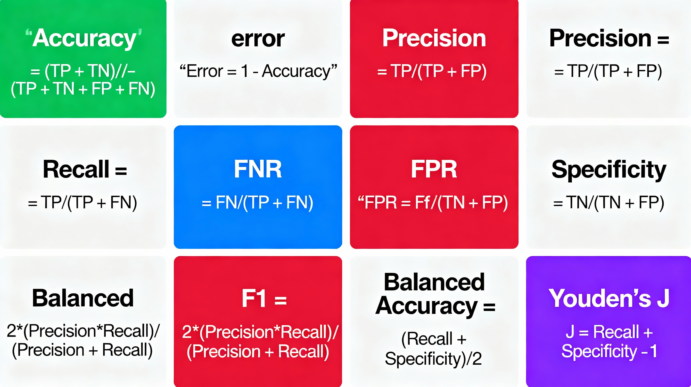

Warning: NAs introduced by coercionStroke Analysis
Logistic Regression Study
Introduction
I have chosen to use Logistic Regression as a tool in Data Science to explore a simple dataset to predict stroke. One cannot appreciate the use of Logistic Regression without some knowledge of how it came to be some widely used in healthcare.
Literature Review
Logistic Regression came from the logistic function to explain changes in population growth in the United States (Cramer, 2002). According to Malthus the human population left to itself, will increase in geometric progression. One of the mathematicians to study this relationship was Pierre-Francois Verhulst in1838 (Cramer, 2002).
The relationship for population growth was W(t) = dW(t)/dt. The simplest explanation is that W(t) is proportional to W(t) such that W(t) = βW(t), β = W(t)/W(t), with β the constant state of growth. This leads to exponential growth W(t) = A exp βt. Where A is sometimes replaced by the initial value W (0) (Malthus 1789, quoted in Cramer 2002).
Verhulst modified the equation by inserting a term to represent increasing resistance to exponential growth W(t) = βW(t) – ϕ(W(t)). Verhulst experimented with various forms of ϕ. The logistic appears when this is a quadratic, hence the equation can be written as:
W(t) = βW(t)(Ω – W(t)) where Ω denotes the upper limit of saturation level of W, Growth is now proportional both to the population already attained W(t)a and to the remaining term
Ω – W(t). If we express W(t) as a proportion P(t) = βP(t)(1-P(t)) the solution of this differential equation is:
The above equation was named the logistic function (Verhulst, 1938, in Cramer 2002).
Many authors in the next hundred years applied to logistic function to many fields, e.g. Pearl and Reed used the term logistic in applying the function many areas from fruit flies to the human population of French Colonies in North Africa to growth of Cantaloupes (Reed, 1920 in Cramer 2002). The terms of probit and logit were developed later to broaden and further refine the logistic function (e.g. Bliss and Fisher in 1935 setting out the Maximum Likelihood estimation of the Logistic Curve (Blss and Fisher, 1935 in Cramer 2002). Bliss coined the term probit and was widely accepted in many fields. Thie lognormal curve was used in many areas including the demand curve to buy cigarette lighters. But the logistic function was put forth as an alternative to the normal probability function as done by Joseph Berkstrom (1929 in Cramer 2002). Logit and Probit became widely used in many fields over the next decades. However, interpretations using an abstract model of latent regression equation for an ordered probit model of voting behavior of US Congressmen in 1975 showed its use beyond the field of biology. Analyses linking binary discrete responses to several covariates became known as logistic regression (Cramer, 2002)
Logistic Regression wide use in all fields came with the advent of computer and statistical software packages such as BMDP in 1977. Hosmer and Lemeshow also published the first book on Logistic Regression in 1989. The multinomial logit was linked to the theory of discrete choice from mathematical psychology by McFaden as a consultant for a California Public Transportation project. This relationship led to the Nobel Prize in 2000 for McFadden (McFadden, 1973 in Cramer 2002).
Breadth of Logistic Regression Widely Used Across Areas of Society
Logistic Regression has been widely used across all areas of Society. In a study by King, Hatcher, and Bride, Logistic Regression was used to look at the Predictability of Adolescent Female Dating Violence Perpetration (King et al., 2015). The study was concerned with the widespread increase in Teen Violence, especially against Adolescent females. The study used data from the National Longitudinal Study of Adolescent Health to look at dating violence risk factors and their ability to predict perpetration by adolescent females, The CDC defines dating violence as a type of intimate partner violence. It occurs between two people in a close relationship (CDC in King et al., 2015). With the perception of dating violence as a public health problem, risk factors have emerged from studies in the field. These include, substance abuse, early sexual intercourse, pregnancy, multiple sex partners, unhealthy weight control, power and control needs, minority status, exposure to violence, and weapons ownership (King et al., 2015). Other factors also cited in King et al., were poor communication, mental health needs (i.e. suicidal thoughts), and poor self-esteem (e.g., depression and self-blame). The Logistic Regression Model’s results were subdivided by demographic variables such as age, gender, and ethnicity (King et al., 2015). The results indicated that only some of these variables were significantly predictive of Dating Violence among teens, underscoring the need for further research (King et al, 2015). Another study by Larbi Cherif et al in 2025 looked a social demographic Determinants of Women’s Entrepreneurship (Larbi Cherif et al., 2025). The authors determined the need for Women’s entrepreneurship as a economic driver in developing countries like Algeria (Larbi Cherif et al, 2025). The authors reviewed data that found only 13.2% of working Algerian women engage in entrepreneurial activities (Larbi Cherif, 2025). The study used logistic regression to find that marital status, age, and educational level were significant determinants of entrepreneurship. More specifically married women, younger women and women with lower educational levels were more likely to pursue entrepreneurship than single, older and women with higher educational levels (Larbi Cherif et al,, 2025). The authors linked these findings to their conclusion that social and cultural contexts have a profound effect on entrepreneurship (Larbi Cherif et al., 2025). Another study by Eliason et al., used logistic regression to link Aggressive Collection Tactics of not-for-profit hospital’s extraordinary collection tactics (ECA’s) against patients included reporting patients’ debt to credit agencies, filing lawsuits, placing liens on residences, and issuing civil arrest (Eliason et al, 2021). The impetus for the author’s study was the continued reports of extraordinary collection activities Not-for-profit hospitals despite the limitations imposed by the Affordable Care Act (ACA). The concern was the Not-for-Profit Hospitals are required by the Affordable Care Act to make reasonable efforts to determine the need for financial assistance (Eliason et al, 2021). Further under IRS regulations the maintenance of Not-for-Profit status of Hospitals are linked to their providing benefits to the community that include free or discounted medical assistance to patients who qualify under the hospital’s financial assistance policy (FAP, IRS 2019a, cited in Eliason et al., 2021). The author’s used the data from Community Benefits Insight that from the years 2015-2016 and 20,967 observations (Eliason et al., 2021). Characteristics of Not-for-Profit Hospitals that used ECA’s were compared against characteristics of Not-for-Profit Hospitals that did not use ECA’s as reported in the news. Such characteristics included urban location, Church affiliation, number of beds, Charity care as a % of total functional expenses, cash, and in-kind contributions to community groups as a % of functional expenses (Eliason et al, 2021). The results found that hospital that did report ECA’s vs those that did not were less likely to file consolidated returns, less likely to be urban, lower number of beds, less likely to have a written FAP policy, less likely to use poverty guidelines to determine free or discounted care, and reported a lower total revenue (Eliason et al., 2021). Another study by Zhang et al, used logistic regression to determine the influences of explanatory factors on the efficacy of implantation of corporate safety policy in international projects from the perspective of international contractors (Zhang et al, 2019). The factors looked at included attitudes toward safety management measures, operational measures for safety management, systematic safety training schemes, The authors used a questionnaire distributed to international contractors in China (Zhang et al, 2019). The logistic regression model found significant factors were implemental and environmental characteristics in the perceived effective implementation of corporate safety policies (Zhang et al 2019).
Logistic Regression in Stroke
While Logistic Regression has been widely used in many areas of the world in different areas, one area in healthcare where Logistic Regression has been widely used and still is in the prediction of stroke. One study was using logistic regression to identify key inflammatory markers of mortality in Acute Ischemic Stroke (Yural and Kumaglu 2025). In their study, the authors used Logistic Regression on 219 Acute Ischemic Stroke (AIS) patients to determine significant predictors. In this study the authors listed age, sex, diabetes, high systolic blood pressure, elevated lipoprotein levels, high cholesterol levels, renal dysfunction, high body mass index (BMI), atrial fibrillation and coronary artery disease and the timing of interventions such as tissue plasminogen activator administration and endovascular thrombectomy (Yural at Kumaglu 2025) . The authors found that age, and albumin were significant predictors of having stroke or not and gender wasn’t (Yural and Kumaglu, 2025). The authors did state the gender was significant in stroke determination in other studies and that larger sample sizes may bear this out (Yural and Kumaglu, 2025). Another study ranked stroke and cardiovascular risk factors for an optimal risk calculator design (Cuadro-Godia et al, 2019). The authors’ used logistic regression to rank stroke and cardiovascular risk factors to formulate an optimal risk calculator (Cuadro-Godia et al., 2019). Among stroke and cardiovascular risk factors were Age, Gender, Smoking Status, Plaque score on the left and right atrium, blood pressure, cholesterol level, ldl and hdl, family history of stroke, and hypertension (Cuadro-Godia et al., 2019). The sample consisted of 494 ultrasound scans on 202 patients. The results found significance of bp and certain protein factors as risk factors in stroke (Cuadro-Godia et al., 2019). Another study used logistic regression in looking ate influences of hyperlipidemia history on stroke outcome (Shigematsu et al., 2015). The authors used 12,617 stroke patients from the Kyoto Stroke Registry. Among the variables the authors used were age, gender, stroke type, systolic and diastolic blood pressure, hypertension, diabetes, cigarette smoking, alcohol consumption, Activities of Daily Life (ADL) and Pct Mortality (Ie death). The authors found interestingly that while hyperlipidemia increases the possibility of stroke, it also makes it less severe (Shigematsu et al., 2015). Another study used logistic regression to determine the influence of copper intake to the risk of stroke in adults (Yang et al, 2022). The authors explored the relationship between copper intake and stroke based on a sample of 10,550 participants in the National Health and Nutrition Survey (NHANES), over a 5-year period from 2013-2018 (Yang et al., 2022). A stratified logistic regression analysis found that copper had a significant protective effect for women, individuals younger than 65 years old, individuals with hypertension, individuals who smoke, and diabetic stroke patients (Yang et al., 2022). Finally a ordered logistic regression study by He et al., in 2025 looked at the correlation between acute ischemic stroke, and triglyceride-glucose index (TyG) (He et al, 2025). The authors looked at 165 individuals with acute ischemic stroke treated by intravenous alteplase (He et al., 2025). The study found that a higher TyG index, indicating greater insulin resistance is associated with worse neurological outcomes in stroke patients and further study is needed to look at neurological recovery (He et al., 2025).
These studies are indicative of the wide use of logistic regression in stroke. This gave us the impetus to choose logistic regression to study in predicting stroke, using the Kaggle dataset.
Nevertheless, while the dataset from Kaggle is useful to show the technique of logistic regression in predicting stroke, it comes with some limitations. There are studies that look at the relationship between a dataset and the appropriateness of techniques used to analyze it. One such study by Bailly et al., looked at the effects of dataset size and interactions on the prediction performance of logistic regression and deep learning models (Bailly et al., 2022). In their study the authors acknowledge the power of deep learning and machine learning in predicting the presence or absence of a disease (Bailly et al., 2022). To achieve good prediction these models, require a certain amount of data to train on and where this amount of data is limited and there are difference in dataset structure an content, the authors study looks at these effects on accuracy, sensitivity, specificity, area under the curve (AOC) and the F1 score, all derived from the confusion matrix (Bailly et al., 2022). Among their findings were that logistic regression and Neural Networks were subject to uncertainty (Bailly et al, 2022). That with the two types of uncertainly, aleatory uncertainty (uncertainly in the data itself, which cannot be reduced), and epistemic uncertainty (uncertainty due to model design) that can be reduced by adding additional knowledge) , and by using synthetic data the authors were able to conclude among other issues that logistic regression outperformed Neural Networks with our without interactions regardless of sample size (Bailly et al., 2022).Another study looked at seven data mining algorithms on different characteristics of datasets for biomedical classification (Zhang et al.,2017). The authors looked at 7 data mining algorithms, c45, support vector machines, AdaBoost, K-nearest neighbor, Naïve Bayes, random forest, and logistic regression. The authors applied these techniques to 12 public UCI datasets with the tasks of classification and compared their performances thru induction and analysis Zhang et al., 2017). Among the results the authors found that Logistic Regression is suitable for small datasets with high correlations between the task and other non-task attributes (Zhang e al., 2017). Finally, a study compared logistic regression and Naïve Bayes classifiers in landslide susceptibility assessment. The influence of the model’s complexity and training dataset size (Tsangaratos and Illia, 2016). The authors used a dataset of 116 sites located on the mountains of Epirus Greece where serious landslides have been encountered (Tsangaratos and Ilia, 2016). Classifying the land as landslide and not landslide using 9 datasets. Based on the combined data, with the complexity of the data and the number of characteristics of the land, The Naïve Bayes Classifier outperformed Logistic Regression (87.5% vs 82.16%). The conclusion was the Logistic Regression worked best with defined datasets and that as dataset complexity increases, Logistic Regression’s accuracy decreases relative to the Naïve Bayes Classifier (Tsangaratos and Illia, 2016). Finally its widely used in Clinical Healthcare due to its applicablity in Disease prevalence and clinical interpretation (Hua, et al., 2025)
Summary
To summarize, Logistic Regression is a widely used classifier technique used across knowledge fields in the world and in healthcare. Its used widely in bi outcome disease detection including stroke, but that there are limitations to Logistic Regression including messy non defined datasets and N size.
Method
We chose our topic as logistic regression. So What is logistic regression?
Mathematically:
Logistic regression is a statistical modeling technique that predicts the probability of a binary outcome (such as 0 or 1) using one or more independent variables.
Mathematical Formulation
The key idea is to model the log odds (also called the logit) of the probability of the event as a linear function of the predictors:
- log(p1−p)=β0+β1x1+β2x2+…+βkxklog(1−pp)=β0+β1x1+β2x2+…+βkxk
where pp is the probability of the outcome (e.g., stroke), the xixi are predictors, and the βiβi are their coefficients.
Solving for pp, the equation becomes:
p=11+e−(β0+β1x1+…+βkxk)p=1+e−(β0+β1x1+…+βkxk)1
This is the logistic function, which always outputs values between 0 and 1, making it ideal for probabilities.
Here is a picture of Logistic Regression on a predictor variable.
Logistic Function Example

Patient data points (age, glucose, hypertension, heart disease, BMI, smoking status) are plotted and colored by stroke outcome (0 = no stroke, 1 = stroke).
The logistic regression curve (S-shaped sigmoid) fits the data and maps predictor values to estimated stroke probability.
A vertical threshold line (at probability 0.5) divides the plot, indicating the decision boundary for binary classification.
Below the curve: patients more likely classified as “no stroke.”
Above the curve: patients more likely classified as “stroke.”
(1) Odds are defined as p/(1−p)p/(1-p)p/(1−p), the ratio of the probability of the event to the probability of its complement.
(2) The logit transformation (natural log of the odds) turns this nonlinear problem into a linear one, so standard linear modeling techniques can be used for estimation.
(3) Coefficients (β) are commonly estimated using maximum likelihood methods, not ordinary least squares.
A comparison between Logistic Regression and Multiple Regression is shown below
| Feature | Multiple Regression | Logistic Regression |
| Outcome variable type | Continuous (real numbers) | Categorical/Binary (e.g., 0 or 1) |
| Example prediction | Predicting house prices | Predicting disease presence/absence |
| Model equation | Linear combination of predictors | Log odds/logit (S-shaped curve: logistic function) |
| Estimation method | Least squares | Maximum likelihood |
| Output type | Actual values (e.g., $125,000) | Probability of being in a category (e.g., 87%) |
| Usage | Continuous outcome (income, cost, score) | Categorical outcome (yes/no, 0/1) |
We chose a dataset by Fedesoriano in Kaggle to use logistic regression on. The dataset has 5110 observations with 12 variables.
(1) Unique ID
(2) Gender (Male, Female, Other) – variable type: categorical
(3) Age – variable type: continuous
(4) Hypertension (Hypertension, no Hypertension) -variable type: categorical
(5) Heart Disease (heart disease, no heart disease) – variable type: categorical
(6) Marital Status (married, or not married) – variable type: categorical
(7) Work Type (private, self-employed, other, public service, children) – variable type: categorical
(8) Residence Type (urban, rural) – variable type: categorical
(9) Average Glucose Level (In the blood) – variable type - continuous
(10) BMI (Body Mass Index) -variable type - continuous
(11) Smoking Status (smokes, formerly smokes, never smoked, unknown) – variable type: categorical
(12) Stroke (Stroke or no Stroke) variable type: categorical (the outcome variable)
Since the outcome variable stroke 2 outcomes (stroke or no stroke), the choice is confirmed to be logistic regression as the model to be used on this dataset.
We then uploaded the Kaggle dataset into R studio server and analyzed it with R. We first utilized 12 different packages and libraries. They are listed below. These packages and libraries gave us the statistical models we then used to analyze the Kaggle dataset.
1. dplyr
2. car
3. ResourceSelection
4. caret
5. pROC
6. logistf
7. Hmisc
8. rcompanion
9. ggplot2
- knitr
- summarytools
- DescTools
We first prepared the data, ensuring that all variables in the dataset, both predictor and outcome variables were converted or recoded to numeric as follows:
(1) age (continuous), we decided to recode to numeric with 2 places after the decimal.
(2) gender (categorical) we coded 1 for male and 2 for female. There was only 1 case where it was coded other. We recoded other as N/A. We coded this as categorical.
(3) hypertension had 2 categories and was coded as categorical
(4) heart disease had 2 categories and was coded as categorical
(5) marital status had 2 categories, married, or not married and was coded as categorical
(6) Work type had 4 categories1 = Government, 2 = private sector, 3 = self-employed, 4 = never worked and was coded as categorical
(7) residence type had 2 categories rural and urban and was coded as categorical
(8) bmi (continuous) was recoded as numeric with 2 places after the decimal
(9) average glucose level(continuous) was recoded as numeric with 2 places after the decimal
(10) smoking status had 4 categories, smoking, nonsmoking, previous smoking, and other. It was coded as categorical.
(11) ID number -was left as is and deleted because it’s not needed
(12) Stroke (outcome is categorical has 2 categories, 1 = stroke, 0 = no stroke
Once that was done, we got rid of extraneous values such as “N/A”. After deleting rows that were useless or irrelevant values were left with a dataset of 3357 cases, 11 predictor variables and an outcome variable. As the rule of thumb for minimal size to run analyses is 15 cases per number of predictor variables. Applying this rule of thumb to our project, the dataset’s minimum is 132 cases. Since the cleaned dataset has 3357 cases, we can use logistic regression on the dataset.
Once the variables were coded correctly, we then confirmed it and ran a histogram to confirm the values for each categorical variable and reviewed the frequency distribution for the numerical variables.
In addition, we ran the mean, range, and standard deviation for numerical variables.
We then turned to the use of logistic regression on the dataset. For logistic regression to be used on the dataset, it had to pass 6 assumptions
(1) Assumption 1: The outcome variable was binary. In this case 0 or 1.
We can confirm this from the histogram of the outcome variable (stroke or no stroke)
(2) Assumption 2: There is a linear relationship between i.e., Logit (log- of the odds ratio) of the outcome and each continuous linear predictor is linear
Mathematically logit (p) = Log ).
We Test for this with the Box-Tidwell test to check for linearity between the predictors and the logit. The procedure adds the log transformed interaction terms between the continuous independent variables. The interaction terms is then added as a new variable, so for example Age becomes ln (Age).
Note: For the Box Tidwell test we will filter the dataset to keep continuous independent predictors. We then add the interaction terms and re-run the logistic regression. We then check the interaction terms and look for the P values. If there are not statistically significant P values I.e., P ≥ .05 then the variables are linearly related to the logit outcome variable and the assumption is satisfied.
(3) Assumption 3: No influential outliers. Influential outliers distort the accuracy and outcome of the model.
We can check for this with Cooks D (Cooks Distance) to determine the influence of a data point. Cooks D is calculated based on its residual and leverage. It summarizes the changes in the regression model when that particular (ith) observation s removed. As a popular method the threshold is 4/N where N is the number of observations. If Cooks distance is > 4/N rt hen we have influential outliers. We can also plot Cooks D. Data points with standardized residual values greater than 5 represent possible extreme outliers.
(4) Assumption 4: No multicollinearity. Multicollinearity is where the data set contains strongly correlated independent variables. This becomes a problem because it reduces the statistical power of the logistic regression model. We can check this with VIF (Variance Inflation Factor).
Mathematically: VIF = the ratio of the overall Model variance to the variance of a model that includes only that single independent variable. The smallest possible value for VIF = 1 (a complete absence of multicollinearity). A rule of thumb says a VIF values that exceeds 5 or 10 indicates a problem with multicollinearity.
(5) Assumption 5: Independence of Observations. Each observation is independent of each other. Ie they are not repeated or paired data. Based on the definition of the Kaggle dataset, each observation of the Kaggle dataset is a different patient. So, this assumption is met.
(6) Assumption 6: The dataset N size. If we have small N size, it affects Logistic Regression in several ways:
- Bias in the Parameter Estimates:
1.the Maximum Likelihood Estimate (MLE) used for Logistic Regression can produce biased estimates. Especially If the events are rare.
- Odds ratios tend to be overestimated and standard errors for coefficients become large and unreliable.
b. Separation Problems: With very small samples, we may have complete or quasi- complete separation. The optimizer cannot estimate finite parameters and the standard logistic regression will fail to converge.
c. Statistical Power: A small N size means low statistical power, in other words. Unable to detect true associations. Especially for less frequent predictors or outcomes.
We can test for this with a rule of thumb: There needs to be at least 10 cases for every predictor and a minimal total of 500 cases. Since we have 12 predictors the minimum number of cases is 12 x 10 = 120 cases.
Once we determine that the assumptions are met, we plan to look at 3 different logistical regression models, the base logistic regression, a firth logistic regression model and a refinement of the firth logistic regression model called FLIC.
Developing 3 Different Logistic Regression Models
We decided to develop 3 different logistic regression models. The rationale for this came from the percentage of strokes from the Kaggle dataset compared to the percentage of strokes in the US. The Percentage of strokes in the Kagle dataset is 5.6%, Compared the CDC’s percentage of strokes at 3.1%. There are problems with bias, separation and skewed predicted probabilities.
(1) Small Sample Bias is an issue where the outcome is a stroke, is rare, which could produce biased parameter estimates. So, there is a danger of over or under estimation of stroke risk, because the datasets prevalence rate differs from population in the US.
(2) Separation: if the dataset is imbalanced there is a danger of categories of predictors predicting the outcome at perfect percentage of 100% or near perfect. The Coefficient estimates cam become infinite or very large making the basic logistic regression model unreliable.
(3) miscallibrated probabilities: The predicted probabilities from standard logistic regression can be skewed when the datasets outcome of a stroke, 5.6% doesn’t match the population levels.
Because of these reasons, 2 alternative models are being used to compare. Firth Regression and Refinement of Firth Regression called FLIC.
In datasets of rare events, Firth Regression introduces bias reduction thru Jeffries Prior that reduces the biases in datasets with rare events. This pulls parameter estimates away from infinity and large numbers.
Firth regression produced refined finite estimates even if there is perfect prediction between predictors that perfectly separate stroke vs no stroke cases.
Finally, Firth Regression produces results like large sample size.
probability calibration: Firth regression, while correcting bias, tends to bias predicted event probabilities (average predicted toward 0.5. Your stroke model could predict higher risk for all, regardless of the actual prevalence.
FLIC (Firth’s logistic regression with intercept correction) adjusts the intercept after fitting the model so that the average predicted probability exactly matches the observed rate in your data (5.6% in this case). This is especially useful if your sample prevalence intentionally differs from the “true” population prevalence, as in case-control studies or enriched samples.
Analyzing the 3 models
The Three different Models of Logistic Regression: Baseline Firth and Flic Correction. We are creating 3 different models to really test to see if the dataset had a stroke percentage that is less than the real percentage of stroke to population ratio in the US. Because this is a so called “rare event” Firth regression takes this into account. as does its refinement FLIC.
We will then compare the models performance by using a confusion matrix, area under curve (AUC) and Youden’s J
A confusion matrix is a tool used to evaluate the performance of a classification model (in this case a logistic regression model classifying the outcome as stroke or no stroke. It’s way of comparing true and false positives and true and false negatives. This is very similar to a type1/type 2 error table in regression analysis. The difference being in that the type1/type 2 error table looks at the probability of error to predict to the population whereas the confusion matrix looks at model categorization.
A Typical Confusion Matrix


A Confusion Matrix creates several measures of a categorical model’s performance.
Youden’s J ranges from 0 (No diagnostic ability) to 1 (Perfect Diagnostic Ability). In other words, a 0 means the model performance no better than chance, while a 1 means the model has perfect sensitivity and specificity. It’s used to see the optimal threshold for a model.
Graphically The point on the ROC curve where J is maximized is farthest from its diagonal and represents the best trade off between specificity and sensitivity.
Youden’s J is valuable as a single performance metric that gives equal weight to false positives and false negatives. This makes it useful in medical diagnostics where balanced accuracy is crucial.
Youden’s J
Results and Analyses
Coding the Predictors and Omitting irrelevant values
Because we are using Logistic Regression a Quantitative tool, all predictors and the outcome variable must also be coded to quantitative equivalents. We also had to deal with N/A…so there were predictor variables in the dataset that had “N/A”, Unknown, Children and Other. It would be easier to recode all the irrelevant values as “N/A” and get rid of them all at the same time. We also recoded gender to 1 as male and 2 as female. We also limited the bmi predictor to 2 places after the decimal.Finally we recoded all text categorical variables into numeric variables.
Showing Descriptive Statistics for all variables, Mean, Std Deviation, and Interquartile Range
| Mean_Age | Range_Age | SD_Age | Mean_BMI | Range_BMI | SD_BMI | Mean_AvgGlucoseLvl | Range_AvgGlucoseLvl | SD_AvgGlucoseLvl |
|---|---|---|---|---|---|---|---|---|
| 49.38725 | 13 - 82 | 18.31051 | 30.43953 | 11.5 - 92 | 7.249738 | 108.4443 | 55.12 - 271.74 | 47.92139 |
Looking at the distribution of all the predictor indicators and the outcome indicator with Histograms

<ggplot2::labels> List of 3
$ x : chr "gender"
$ y : chr "Frequency"
$ title: chr "Histogram of gender"`stat_bin()` using `bins = 30`. Pick better value `binwidth`.


The Basic Logistic Regression Model
[1] 1 0
Levels: 0 1'data.frame': 3357 obs. of 14 variables:
$ gender : num 1 1 2 2 1 1 2 2 2 2 ...
$ age : num 67 80 49 79 81 74 69 81 61 54 ...
$ hypertension : num 0 0 0 1 0 1 0 1 0 0 ...
$ heart_disease : num 1 1 0 0 0 1 0 0 1 0 ...
$ ever_married : num 1 1 1 1 1 1 2 1 1 1 ...
$ work_type : num 2 2 2 3 2 2 2 2 1 2 ...
$ Residence_type : num 1 2 1 2 1 2 1 2 2 1 ...
$ avg_glucose_level : num 229 106 171 174 186 ...
$ bmi : num 36.6 32.5 34.4 24 29 27.4 22.8 29.7 36.8 27.3 ...
$ smoking_status : num 2 1 3 1 2 1 1 1 3 3 ...
$ stroke : Factor w/ 2 levels "0","1": 2 2 2 2 2 2 2 2 2 2 ...
$ ageadj : num 81 94 63 93 95 88 83 95 75 68 ...
$ avg_glucose_leveladj: num 285 162 227 230 242 ...
$ bmiadj : num 49.1 45 46.9 36.5 41.5 39.9 35.3 42.2 49.3 39.8 ...
- attr(*, "na.action")= 'omit' Named int [1:1753] 2 9 10 14 20 24 28 30 32 39 ...
..- attr(*, "names")= chr [1:1753] "2" "9" "10" "14" ...
Test stat Pr(>|Test stat|)
ageadj 1.9958 0.1577
avg_glucose_leveladj 0.0070 0.9331
bmiadj 0.3549 0.5514Model :
stroke ~ ageadj + avg_glucose_leveladj + bmiadj
| Check | Value |
|---|---|
| Max VIF (multicollinearity) | 1.1 |
| InfluentialCases (cooks_d > 0.5 | 0.0 |
As you can see, the red flat lines for the 4 graphs indicate no nonlinear relationship between each numerical predictor and the outcome variable. In addition one can also see there are no influential outliers by shown by cook’s D.
Intialize Results. We have to initialize results before calling the model
| Model | Precision | Recall | F1 | AUC | Youden.threshold | Youden.sensitivity | Youden.specificity | Youden.youden | |
|---|---|---|---|---|---|---|---|---|---|
| Pos Pred Value…1 | Baseline LR | 1.0000000 | 0.0111111 | 0.0219780 | 0.828458 | 0.0693444 | 0.7444444 | 0.7777778 | 1.522222 |
| Pos Pred Value…2 | firth LR | 0.6666667 | 0.0111111 | 0.0218579 | 0.828458 | 0.0710034 | 0.7444444 | 0.7777778 | 1.522222 |
| Pos Pred Value…3 | flic LR | 1.0000000 | 0.0111111 | 0.0219780 | 0.828458 | 0.0693544 | 0.7444444 | 0.7777778 | 1.522222 |
Area under the curve: 0.8285Area under the curve: 0.8285Area under the curve: 0.8285
Here we see the results. Note that overlaying the curves and Youden’s J is EXACTLY the same for all three models. This is a strong indication that the dataset is currently balanced enough to distinguish between stroke and non stroke. The bias if any would have shown up in a different AUC curve, and a different Youden’s J. It does not.
Plot the Confusion Matrices

The results indicate exactly that the confusion matrices are exactly the same. So the conclusion we can reach is the there was no significant bias in the dataset. The dataset can distinguish between stroke and non stroke events with sufficient selectivity. While there is a slight difference in Youden;’s cutoff from .069 in the base model, to .071 in the FIRTH model, to .069 in the FLIC model This means that FIRTH did adjust the predicted threshold minimally. However, practically this means virtually no change in the prediction across models.
| Model | AUC | Youden’s J | Interpretation |
| Standard | Same | Same | Dataset is stable, no fitting method advantage |
| Firth | Same | Same | No separation or bias detected |
| FLIC | Same | Same | Same discriminative ability, robust prediction |
Future Directions and Conclusion
Because the AUC and Youden’s J are the same, with the predictability of the model at 86.5%, the same. I don’t see any more we can do for this dataset, given its predictor variables are well known in other stroke studies. Logistic Regression appears to be the best fitting algorithm for predicting stroke for this dataset. Using SMOTE might give an incremental increase in prediction, but given the well defined dataset and the common stroke risk factors, I dont think we need to run anymore tests. In summary, Logistic Regression is a very good algorithm to use on this dataset. As long as the dataset is well defined and non-complex.
References
American Psychological Association (2020). Publication Manual of the American Psychological Association (7th ed). https//doi.org/10.1037/0000165-000
Bailly, A., Blanc, C., Francis, E., Guillotin, T., Jamal, F., Wakim, B., Roy, P (2022). Effects of dataset size and interactions on the prediction performance of logistic regression and deep learning models. Computer Methods and Programs in Biomedicine. Vol 213 (2022) 106504. https://doi.org/10.1016/j.cmph.2021.106504.
Cramer, J, S. (2002). The Origins of Logistic Regression. Tinbergen Institute Discussion Paper. TI 2002-119/4. Pgs. 1-14.
Cuadrado-Godia, E., Jamthikar, D, A., Gupta, D., Khanna, N, N., Araki, T., Maniruzzamen, M., Saba, L., Nicolaides, A., Sharma, A., Omerzu, T., Suri, S., H., Gupta, A., Mavrogeni, S., Turk, M., Laird, R, J., Protogerou, A., Sfikakis, P., Kitas, D, G., Viswanathan, V., Suri, S, J. (2019). Ranking stroke and cardiovascular risk factors for an optimal calculator design. Logistic Regression Approach. Computers in Biology and Medicine Vol 108, 182-195. https://doi.org/10.1016/j.compbiomed.2019.03.020
Eliason, L, E., MacDougall, H., Peterson, L. (2022). Understanding the Aggressive Practices of Nonprofit Hospitals in Pursuit of Patient Debt. Health & Social Work. 47(1). 36-44. https://academic.oup.com/hsw/article47/1/36/6459097
King, M, D., Hatcher, S, S., Bride, B. (2015). An Exploration of Risk Factors Associated With Dating Violence: Examining the Predictability of Adolescent Female Dating Violence Perpetration. Journal of Human Behavior in the Social Environment. Vol 25,907-922. https:// doi.org/10.1080/10911359.2015.1040907
Hadjira, L, C., Badreddine A., Sabri, A., (2025). Socio-Demographic Determinants of Women’s Entrepreneurship: A Binary Logistic Regression Analysis. Business Ethics and Leadership. Vol. 9(2), 55-64. http://doi.org/10.61093/bel,9(2).55-64.2025.
Hua, Y., Stead, S, T., George, A., Ganti, L (2025). Clinical Risk Prediction with Logistic Regression: Best Practices, Validation Techniques, and Applications in Medical Research. Academic Surgery and Medicine.online. https://doi.org/10.62186/001c.131964
Liu, H., Li, R., Wang, L., Zhu, L., Zhu, X., Zho, Q., Yang, Z., Liu, H. (2025). Analyzing the correlation between acute ischemic stroke and triglyceride-glucose index based on ordered logistic regression. Frontiers in Neurology. Vol 16: 1500572. https://doi: 10.3389/fneur.2025.1500572.
Shigematsu, K., Watanabe, Y., Nakano, H., and on behalf of the Kyoto Stroke Registry Committee. (2015). Influences of hyperlipidemia history on stroke outcome: a retrospective cohort study based in the Kyoto Stroke Registry. BMC Neurology.15- 44. https://doi.10.1186/s 128883-015-0297-1.
Tsangaratos, P., Illia, I. (2016). Comparison of a logistic regression and Naïve Bayes classifier in landslide susceptibility assessments: The influence of models complexity and training dataset size. Catena. Vol 145, 154-179. https://dx.doi.org/10.1016/ j.catena.2016.06.004.
Vural, A., Cumaoglu, O, M. (2025). Identifying Key Inflammatory Markers of Mortality in Acute Ischemic Stroke using Logistic Regression Analysis. Eurasian Journal of Emergency Medicine. of Vol 24(1), 50- 55.Http://doi:10.4274/eajem.galenos.2025.21957
Yang, L., Chen, X., Cheng, H. Zhang, L. (2022). Dietary Copper Intake and the Risk of Stroke in Adults. A Case-Control Study Based on National Health and Nutrition Examination Survey 2013-2018. Nutrients. Vol 14(409). https://doiorg/10.3390/ nu.4030409.
Zhang, Q., Chong, H., Liao, P., Wan, Y. (2020). Logistic Regression modeling of implementation of corporate safety policy in international infrastructures Engineering, Construction, and Architectural Management. Vol 27(10). 3031-3050. https://doi 10.1108/ECAM-03-20190-0155.
Zhang, Y., Xin, Y., Li, Q., Ma, J., Li, S., Lv, X,. Lv, W. (2017). Empirical study of seven data mining algorithms on different characteristics of datasets for biomedical classification applications. BioMedical Engineering OnLine. 16:125. https://doi.10.1186 s12938-017-0416-x
Zhou, Y., Song, L., Liu, Y., Vijayakumar, P., Gupta, B, B., Alhalabi, W., Alsharif, H. (2023). A privacy-preserving logistic regression-based diagnosis scheme for digital healthcare. Future Generation Computer Systems, Vol 144, 63-73. https://doi.org/10.1016/ j.future.2023.02.022.
Introduction & Objectives
- Background and study context
- Research question or hypothesis
- Study objectives
- Significance of the analysis
Data & Methods
- Sample size and data source
- Key variables and predictors
- Logistic regression approach
- Statistical validation methods
Results & Findings
- Significant predictors identified
- Model performance metrics (AUC, etc.)
- Key statistical findings
- Clinical or practical implications
Conclusions
- Summary of main findings
- Study limitations
- Recommendations for future research
- Clinical or policy implications